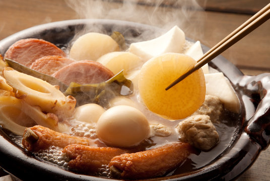

Oden

Oden
Oden is a tough dish to pin a recipe to because there are many different versions of oden. Additionally, there are many different soups
and the ingredients, while there are staples, can be whatever the people want to throw in. I will be using the ingredients
most often found across Japan. You are likely to see this at food stalls and in resturaunts. But, more often in convienence stores.
Oden is particuarly great for the winter season. It is hearty, filling, and can be as healthy (or unhealthy) as you would like.
Often, people gather in groups for "nabe parties" and eat oden and drink beer. It really is one of my favorite memories of being abroad in Japan.
From my memories to your shopping list, I hope you and your loved ones can have a nabe party of your own. Enjoy!
Broth Ingredients
- Sugar
- Salt
- Soy Sauce
- Mirin
- Kelp and Bonito Stock
Main Ingredients
- Daikon (Japanese Raddish)
- Boiled Eggs
- Potatoes
- Boield Octopus
- Chikuwa
- Konnyaku
- Choice of meat
Broth Steps
- Combine 1.5ml of Dashi stock, 60ml of mirin, 1 tablespoon of sugar, and 60ml of soy sauce in a pot and bring to a boil.
- Add the mixture to a nabe dish and bring the mixture to a boil.
Cooking Steps
- Pre prep the ingredients by peeling them and cutting them into bite sized pieces.
- Add the ingredients to the nabe pot in sections. Try to keep each ingredient separate.
- Add extra ingredients to the side to add for later.
- Bring the covered nabe pot to a boil using a portable burner (if you don't have one, just bring the pot to a boil and then bring it to the table)
- Once the ingredients are fully cooked, feel free to pick from the pot as you like.
- If you don't want to waste the ingredients, it's also great to add rice or noodles of your choice.
Home